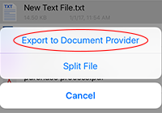
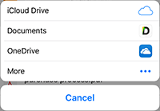
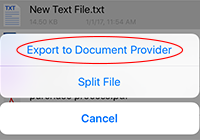
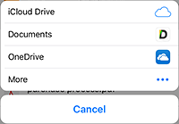

Cloud
- Import files from or export files to Document Providers, like iCloud, Box, Dropbox, the Documents App, and any other Apps that act as Document Provider. Specifically, click "+" button on Toolbar to select and import files (it may take some time if the file is big), and long-pressing on a file and choose "Export to Document Provider" to export the file.
 
 